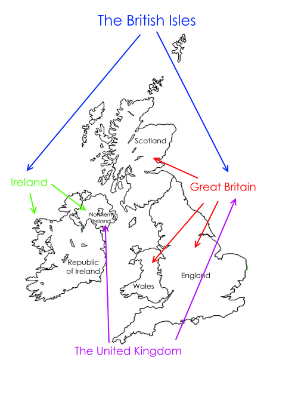
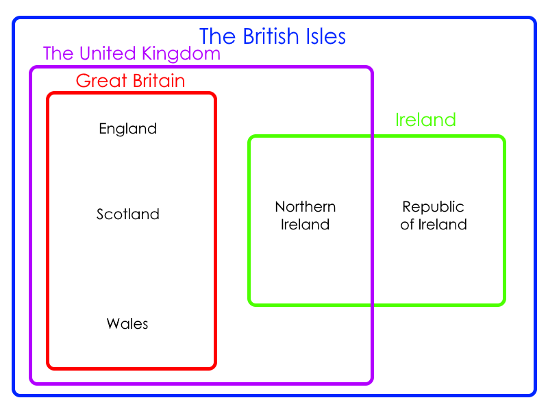

The British Isles: Explained
Have you ever gotten the terms "England," "Great Britain," and "United Kingdom" confused before? Have you wondered what the difference is? Maybe you've just thought of them as all the same thing. This will help you understand better.
Here's a map of the British Isles. The British Isles is a geographical term referring to the islands of Great Britain and Ireland, as well as the thousands of smaller, surrounding islands. This may surprise you, but neither Great Britain nor Ireland are political terms. They are both geographical. Ireland refers to the entire island of Ireland, which includes the countries of the Republic of Ireland (This can, however, also be described as just Ireland, so saying Ireland to refer to the Republic of Ireland isn't wrong) and Northern Ireland. Great Britain refers to the one large island containing most of England, Scotland, and Wales. However, none of these countries lie soley on Great Britain.
England includes many islands, noteably, the Isles of Scilly and the Isle of Wight. Scotland includes even more islands, such as the Northern Isles. Finally, there's Wales, which, while it looks to be entirely on Great Britain, it, again, has many islands. The largest one is the Isle of Anglesey.
Finally, there's the United Kingdom. The United Kingdom includes England, Scotland, Wales and Northern Ireland. Now, history time. Back in the 17th century, England, Scotland, and Ireland were mostly all their own kingdoms. Then, in 1707, England and Scotland passed the Act of Union, unifying the two kingdoms, and creating the Kingdom of Great Britain. Later, in 1801, Britain and Ireland passed the Act of Union, unifying them into The United Kingdom of Great Britain and Ireland. Finally, in 1922, because of nationalism, Ireland left the UK, becoming the Irish Free State, which would later become the Republic of Ireland it is today. However, Northern Ireland decided to stay, creating what we now know as the United Kingdom of Great Britain and Northern Ireland. ...Or just the UK for short.
Here's also a diagram that may help you understand these things better.
